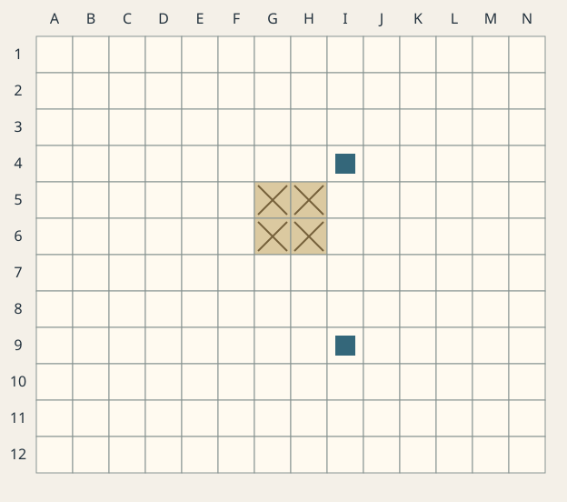

Одинаковые правила, разная история
Все карты совпадают с сеткой нативного пакета: 14 × 12, клетка — 5 футов. G5/H5/G6/H6 — трудная местность; I4/I9 — половинное укрытие. Остальные детали описания декоративны, пока ведущий не изменил поле штатно.
Расстановка и параметры
Начальные клетки героев: B3, B4, B5, B6, C3, C4, C5, C6; штатная подготовленная встреча назначает их присутствующим героям по именам. Противники: L3, L4, L5, L6, M3, M4. Используйте только нужное число фигур. Перед началом герои должны находиться в месте встречи.
Для 3 / 4 / 5 / 6 / 7 / 8 игроков: 2 / 3 / 3 / 4 / 5 / 6 противников, здоровье каждого 12 / 14 / 16 / 18 / 20 / 22. Защита 12; скорость 20 футов; одна ближняя атака +3, 1d4+1 дробящего урона, досягаемость 5 футов.
Враги — простая поддерживаемая модель. Мирные решения и ограничения сцены описаны отдельно; ведущий подтверждает их результат. После первого раунда напомните пути переговоров или отступления. Встречи не запускаются автоматически.
Дорожка между прессами
Только если герои сами выбирают физически проложить выход мимо взрослых взыскателей инструментов, прибывших по обычному спорному заказу. Их присутствие не связано с тайным знанием Таисии; сцену можно целиком решить разговором.
Цель и выходы
Выйти с собственными бумагами Веры и не дать спору о прессе причинить людям вред. Успех — свободный выход, а не победа над всеми. Можно оставить спорную вещь и уйти через заднюю дверь.
Вера показывает, что герои забирают только её бумаги; можно вместе пометить спорный пресс и назначить отдельное обсуждение оплаты. Предложение не требует признания шантажа и не раскрывает тайны.
Поведение противников
Взрослые работники от 30 до 55 лет в рабочих куртках; раздражены задержкой оплаты, не знают тайн или планов расследователей. Условные средства ближнего боя не моделируют реальные приёмы насилия.
Занимают проход и требуют прекратить вынос спорного оборудования; не преследуют ушедших без пресса. При сдаче или прекращении спора принимают паузу. Намерение сторон по умолчанию несмертельное; одна обычная атака +3, урон 1d4+1, КД 12.
Размер группы
На 3 игроков — 2 противника по 12 ОЗ; на 4 — 3 по 14; на 5 — 3 по 16; на 6 — 4 по 18; на 7 — 5 по 20; на 8 — 6 по 22. Для 3–4 предложите один видимый выход; для 5–6 две пары прикрывают разговор и уход; для 7–8 добавьте роли освобождения прохода и сохранения бумаги, не дополнительные обязательные бои.


Сетка 14×12, клетка — 5 футов. Трудная местность только в G5, H5, G6, H6 (четыре клетки): коробки бумаги. Половинное укрытие в I4 и I9: стойки. Закрытый пресс — фон, не дополнительное препятствие. Выходы на противоположных краях свободны; падающих машин, огня и смертельных ловушек нет. Выходы и прочие детали задаёт ведущий в описании; на нативном поле дополнительных препятствий нет.
Пакет у порога
Только при попытке героев силой забрать закрытую отправку до подтверждённого решения адресата. Взрослые помощники пункта предлагают сначала остановиться; бой не начинается автоматически.
Цель и выходы
Прекратить толкотню и сохранить закрытые конверты целыми. Победа означает безопасный доступ к согласованной передаче; отступление оставляет возможность вернуться с адресатом и решить вопрос без силы.
Показать отказ конкретного адресата, согласовать возврат с Павлом либо оставить пакет и получить наружную копию условий. Основное доказательство доступно без захвата содержимого.
Поведение противников
Взрослые сортировщики от 26 до 60 лет; защищают обычный порядок хранения, а не шантажистку. Знают лишь условия своей текущей работы.
Держатся возле дверей хранения и требуют вернуть спорный пакет на стойку. Не преследуют отступивших, прекращают сопротивление при передаче вопроса Павлу. Несмертельное намерение; одна атака +3, урон 1d4+1, КД 12.
Размер группы
На 3 игроков — 2 противника по 12 ОЗ; на 4 — 3 по 14; на 5 — 3 по 16; на 6 — 4 по 18; на 7 — 5 по 20; на 8 — 6 по 22. При 3–4 один герой разговаривает, двое сохраняют проход; при 5–6 работают парами; при 7–8 отдельная пара сопровождает желающих уйти, не создавая новых угроз.

Сетка 14×12, клетка — 5 футов. Трудная местность только в G5, H5, G6, H6 (четыре клетки): тюки. Половинное укрытие в I4 и I9: стойка и закрытый шкаф. Открытый вход и выход во двор находятся на противоположных краях. Конверты лежат вне центральной толкотни. Выходы и прочие детали задаёт ведущий в описании; на нативном поле дополнительных препятствий нет.
Зрители у павильона
Только если герои сами объявили место разговора посторонним и затем выбрали физически выводить навязчивых взрослых посетителей. При частном приглашении этих людей здесь нет; Таисия не узнаёт план автоматически.
Цель и выходы
Дать участникам свободно закончить или перенести разговор и убрать незваных слушателей из выбранного ими пространства. Уход в кафе с прекращением звонка — полноценный безопасный выход, а не провал всего расследования.
Ева закрывает частный павильон для посторонних, герои объясняют границу без пересказа дела или переносят разговор. Никто не должен раскрывать секрет в обмен на уход зрителей.
Поведение противников
Взрослые знакомые круга от 24 до 58 лет, считающие чужую историю общим делом. Они знают только публично объявленное героями и не обладают скрытыми документами.
Спорят возле входа и стараются остаться свидетелями; отступают при ясном отказе хозяев или прекращении встречи. Не преследуют ушедших во двор. Несмертельное намерение; одна атака +3, урон 1d4+1, КД 12.
Размер группы
На 3 игроков — 2 противника по 12 ОЗ; на 4 — 3 по 14; на 5 — 3 по 16; на 6 — 4 по 18; на 7 — 5 по 20; на 8 — 6 по 22. На малом столе ведущий ведёт согласившегося помощника у телефона; на 5–6 роли распределяются по парам; на 7–8 одна пара проверяет согласие на продолжение, не участвуя в толкотне.

Сетка 14×12, клетка — 5 футов. Трудная местность только в G5, H5, G6, H6 (четыре клетки): ящики с растениями. Половинное укрытие в I4 и I9: скамьи. Стена павильона и высокое ограждение служат фоном, падение с крыши не разыгрывается автоматически. Свободная дверь к лестнице — явный путь отхода. Выходы и прочие детали задаёт ведущий в описании; на нативном поле дополнительных препятствий нет.